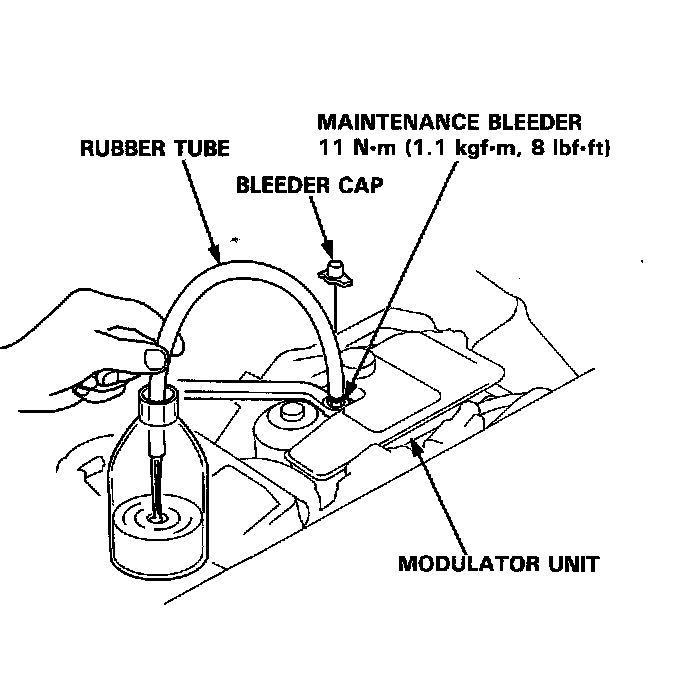

Brake Fluid Pump: Testing and Inspection

Bleeding
When the brake fluid is completely drained from the reservoir (air enters in the modulator unit) during brake fluid replacement, bleed the air from the modulator unit as follows.
1. Fill the reservoir to the MAX (upper) level with fresh brake fluid.
2. Connect the rubber tube to the bleeder on the modulator unit, and set the other end of the rubber tube in a container.
3. Loosen the bleeder, and start the engine to activate the pump motor.
Note: Take care not to spill the brake fluid from the container.
4. Tighten the bleeder when the fluid starts to flow out of the bleeder.
5. Stop the engine after the pump motor stops
Note: If the ABS indicator light comes on and the pump motor stops, restart the engine and repeat steps 3 through 5 above.